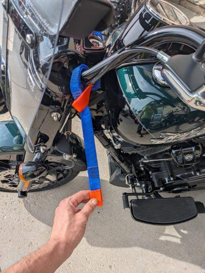

Built around a simpler way to transport motorcycles.

Transport Bridle is a motorcycle tie-down system focused on making setup straightforward for riders transporting their bikes.
The brand message says it best: “So Easy, The New Guy Can Do It!”
This page is ready for the real founder story, how the product was developed, testing history and what problem inspired it.
CONTACT US →